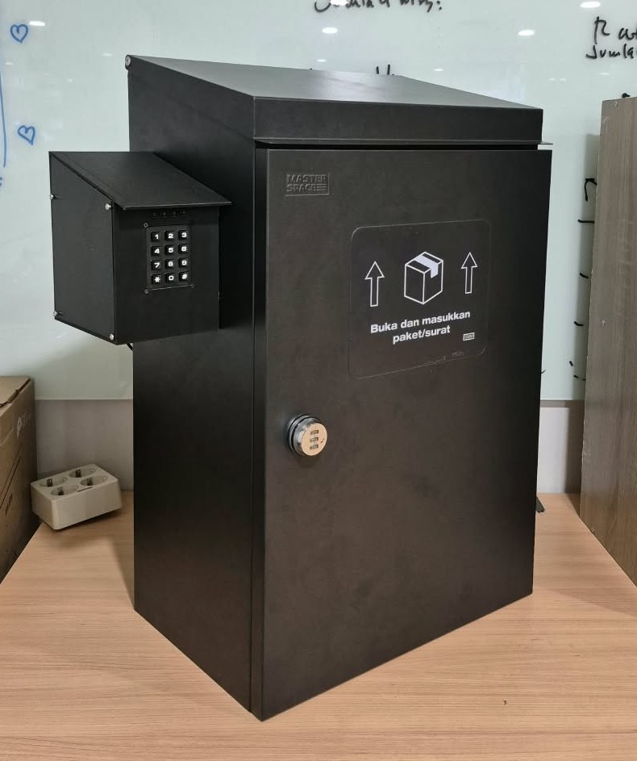
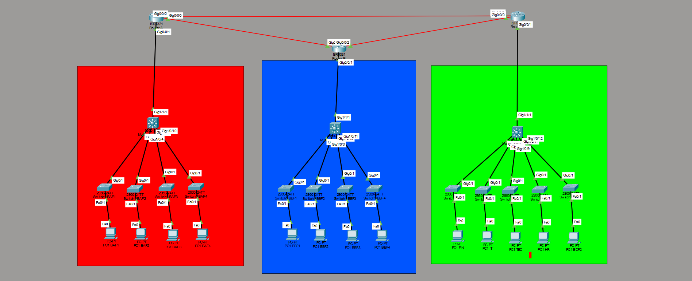
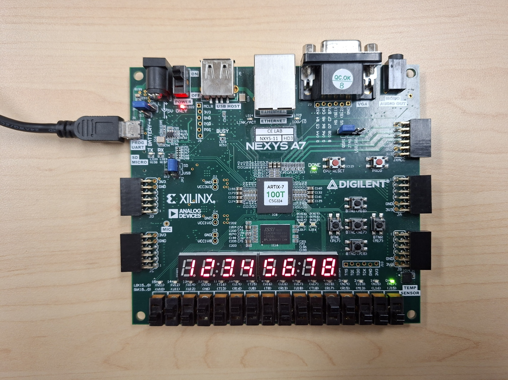
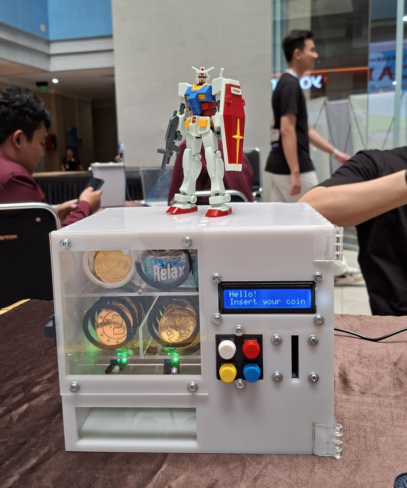
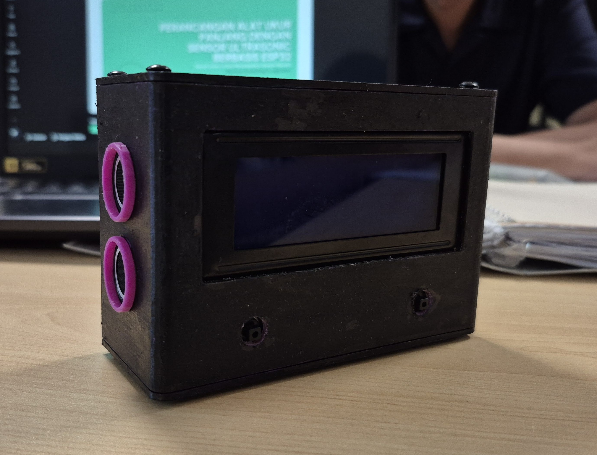

Firmware & Logic
- C/C++
- FreeRTOS
- VHDL
- AVR-GCC
- FSM design
Available for opportunities
Computer Engineering @ BINUS University
I design and build embedded firmware, FPGA logic, and network infrastructure, from bare-metal silicon and real-time operating systems to campus-scale networks and edge-to-cloud IoT.

assets/square_preview.pngFeaturedEmbedded & IoT
A dual-core ESP32-S3 running FreeRTOS coordinates an OV2640 camera, a ToF distance sensor and a solenoid lock. If the network drops, captures queue in a MicroSD FIFO buffer and upload to Firebase when the connection returns.

assets/cnis_topology.pngNetwork & Logic
A Cisco Packet Tracer design of a hierarchical star topology across three campus buildings, with layered security at layers 2 and 3.

assets/fpga_board.pngNetwork & Logic
A door lock implemented in VHDL on a Nexys A7 board, with debounced inputs and a multiplexed 7-segment display.

assets/vending_machine.pngEmbedded & IoT
A compact vending machine on a custom-routed single-layer PCB, with two spiral dispensers and a laser-cut chassis.

assets/metervin_meter.pngEmbedded & IoT
A contactless distance meter that sends readings to WhatsApp through the CallMeBot REST API, with an enclosure calibrated for accurate readings.
Interested in collaborating? Feel free to reach out.